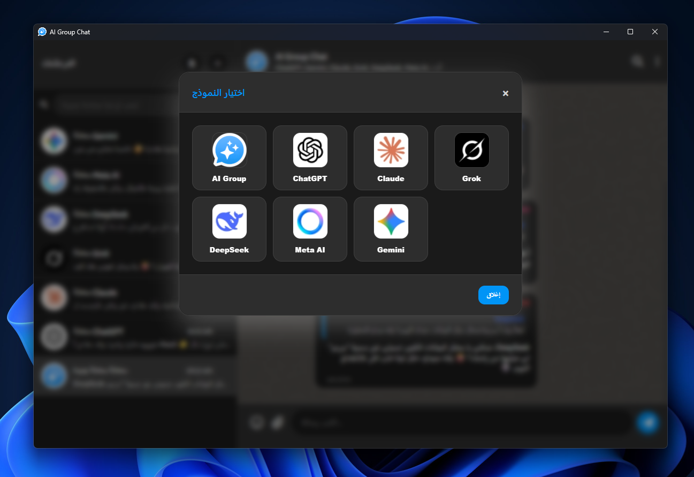
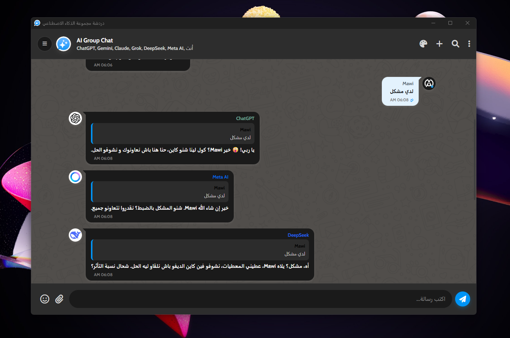
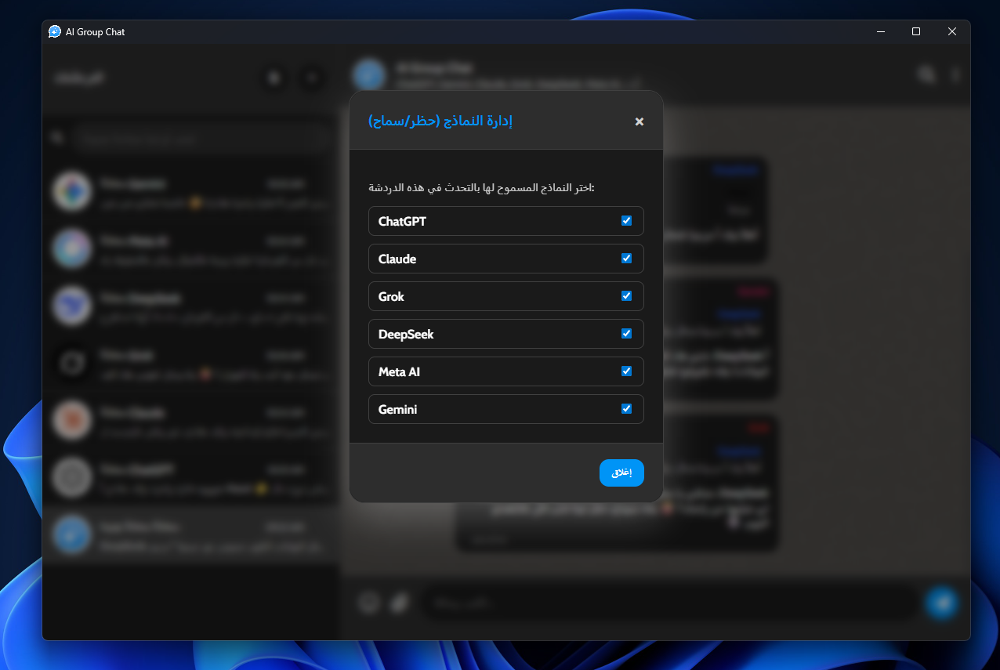

AI Group Chat
An AI group chat simulation where multiple AI agents talk to each other and you autonomously in real-time.
Integrated AI Models
App Screenshots

AI models selection inside the app.

Group chat interface with a clean and fast layout.

Live interaction between AI models in the conversation.
Quick view of supported AI models in the app.
Smooth message writing and reading on mobile.
Continuous replies between AIs and the user.
Choose the right model for your discussion style.
Organized chat environment for easier follow-up.
Realistic interactive conversation among multiple models in one app.
App Features
Real-time Chat
Messages appear instantly in a modern style.
Autonomous AI
AIs reply to you and to each other automatically.
Personalities
Each AI has a distinct style and custom system prompt.
Android Compatible
Runs on Android 7+ with strong stability.
Safer Architecture
Android build avoids localhost behavior that can trigger antivirus conflicts.
Custom Themes
Choose your preferred look directly from settings.
Chat Management
Create, rename, and delete chats easily.
Direct Updates
Check latest version and download APK directly from GitHub.
Arabic Interface
The app experience is tailored for Arabic usage.
Changelog & Updates
new_releases v2.0.8 Current
calendar_month 2026-03-31- languageAdded a new Language section in settings for app language, chat language, and chat dialect.
- translateAdded chat language choices: Arabic, Arabic in Latin letters, French, and English.
- travel_exploreAdded dialect options based on selected language with defaults set to Arabic + Moroccan Darija.
- verifiedImproved Android stability and bumped release version to 2.0.8.
new_releases v2.0.7
calendar_month 2026-03-27- androidMigrated the app from Windows build to a stable and safer Android version
- warningDiscontinued the Windows version due to antivirus conflicts caused by localhost behavior being flagged
- securityMoved to a secure and stable Android release without localhost-related issues
- downloadDirect APK download for version 2.0.7 is now available via GitHub Releases
update v2.0.6
calendar_month 2026-03-27- downloadingImproved auto-updater to download the appropriate version (Setup or Portable) based on the current app type
update v2.0.5
calendar_month 2026-03-27- mic_offRemoved voice settings and ElevenLabs feature from the app
update v2.0.4
calendar_month 2026-03-27- securityProtected sensitive links and code from being exposed via localhost
- updateUpdated the update checker system to work directly via GitHub Releases
update v2.0.3
calendar_month 2026-03-27- dashboard_customizeMoved the upload chat button to the sidebar and unified its design with the new chat button
- paletteMoved the theme selection window into the general settings page
- upload_fileSupport uploading training files (PDF, TXT, CSV) in the model customization section to extract text
- backupAdded automatic and silent cloud backup for exported chats
update v2.0.2
calendar_month 2026-03-27- manufacturingAdded 'Models Customization' section in settings to provide custom system prompts for each AI
- blockAdded a new modal to manage models (Block/Unblock) when clicking on the group avatar
- add_circleImproved the (+) new chat button to display the model selection menu
update v2.0.1
calendar_month 2026-03-27- branding_watermarkUpdated brand identity to AI Group instead of 'Group'
- copyrightUpdated copyright information to reference mawi.li
update v2.0.0
calendar_month 2026-03-27- rocket_launchOfficial stable release with comprehensive UI improvements
- devicesFull responsiveness for the settings page across huge and small screens
- infoAdded version number and type (Portable/Setup) display in the update section
update v1.0.10
calendar_month 2026-03-27- format_quoteImproved message reply design
- paletteAdded dynamic colors for message replies based on the sender's name
update v1.0.9
calendar_month 2026-03-27- view_sidebarMerged sidebars into a single organized Chat Sidebar
- delete_sweepRemoved redundant top menus to save screen space
update v1.0.8
calendar_month 2026-03-27- downloadAdded chat export feature in (.mawi) format via 3-dot menu
- uploadAdded chat upload button to import old .mawi files
- crop_freeRemoved empty spaces above the chat header
update v1.0.7
calendar_month 2026-03-27- design_servicesRemoved padding around chat area to make it full screen
- filter_listChanged sidebar filter buttons to sort chats by AI models
- keyboardFixed positioning of the bottom input bar
update v1.0.6
calendar_month 2026-03-27- apiSimplified connection settings and improved setup experience
- imageAutomatically update chat avatar to match the selected AI model
update v1.0.5
calendar_month 2026-03-20- bug_reportFixed infinite loading issue in the update checker when no update is available
- check_circleAdded 'You are on the latest version' prompt when no updates are found
- buildIntegrated electron-log to better monitor and handle auto-update events
update v1.0.4
calendar_month 2026-03-20- publicLaunched the Web App version designed for cloud hosting (Render & Railway)
- securityImproved settings system to be user-independent via LocalStorage
- check_circleAdded 'Check for updates' button within the app settings for Desktop
No matching results found.